传感器与预训练数据集
算法选型依据与数据集基本参数
目标传感器
- 型号
- Sony / Prophesee IMX636（Gen4 HD）
- 分辨率
- 1280 × 720 像素
- 像元尺寸
- 4.86 µm，背照式堆叠 CMOS
- 输出接口
- MIPI CSI-2 × 4 lane @ 1.5 Gbps/lane
- 事件编码
- EVT3（差分亮度阈值触发）
预训练数据集
- 名称
- 1 Megapixel Automotive Detection Dataset
- 发布机构
- Prophesee
- 传感器
- Gen4 HD（与 IMX636 同代，规格一致）
- 场景
- 城市道路行车，法国巴黎
- 时长
- 训练 24 h / 验证 4 h / 测试 4 h
- 标注类别
- pedestrian · two-wheeler · car
- 标注密度
- 每 50 ms 一帧，约 2500 万个 bounding box
网络结构
RVT（Recurrent Vision Transformer）— Gehrig & Scaramuzza, CVPR 2023 github.com/uzh-rpg/RVT
RVT 由三个串联模块组成：MaxViT 主干网络、PAFPN 颈部与 YOLOX 检测头，并在主干每阶段末嵌入 ConvLSTM 单元以建模时序依赖。
| 模块 | 结构 | 功能描述 | 参数量 (M) |
|---|---|---|---|
| 输入表示 | 堆叠直方图stacked_histogram |
原始事件流按 50 ms 窗口分为 10 个时间 bin，分极性（ON/OFF）计数，得到张量
(20, 384, 640)；传感器输出 720 行，降采样 2× 至 360 行后补零至 384（须为 64 的倍数） |
— |
| 主干 | MaxViT + ConvLSTM | 4 阶段的多轴视觉 Transformer，局部窗口注意力与全局稀疏注意力交替堆叠； 每阶段末嵌入 ConvLSTM，将隐状态跨帧传递以捕获运动历史 | 7.209 |
| 颈部 | PAFPN | 路径聚合特征金字塔网络，融合多尺度特征图，改善小目标检测能力 | 1.596 |
| 检测头 | YOLOX（解耦头） | 分类与回归分支解耦；输出三类目标（行人、两轮车、汽车）的边界框与置信度 | 1.065 |
参数量与计算量
使用 fvcore.nn.FlopCountAnalysis 对完整前向过程精确计数；输入分辨率 640 × 384
| 模型 | 总参数量 (M) | 主干 (M) | 颈部 (M) | 检测头 (M) | GMAC / 帧 | GFLOPS / 帧 |
|---|---|---|---|---|---|---|
| RVT-S （本报告使用） | 9.87 | 7.209 | 1.596 | 1.065 | 8.740 | 17.48 |
| RVT-T（轻量版） | 4.41 | — | — | — | 4.128 | 8.26 |
| RVT-B（标准版） | 47.84 | — | — | — | — | — |
GFLOPS = 2 × GMAC（每个 MAC 含 1 次乘法与 1 次加法）。计算量与输入像素数近似线性，约 35 GMAC / 百万像素。
检测准确率
以下数值均引自论文原文，评测集为 Prophesee 1 Mpx Automotive 官方测试集；mAP 按 COCO 协议计算
| 模型 | mAP@50:95 | mAP@50 | 来源 |
|---|---|---|---|
| RVT-S | 0.441 | — | Gehrig & Scaramuzza, CVPR 2023, Table 1 |
| RVT-T | 0.415 | — | 同上 |
| RVT-B | 0.474 | — | 同上 |
运行性能与 NPU 算力核算
GPU 基准测试硬件：NVIDIA RTX 4060 Laptop（8 GB VRAM）· CUDA 12.6 · PyTorch 2.4 · FP32 · batch = 1 · 单流 RNN 顺序推理
| 模型 | 单帧延迟 (ms) | 吞吐量 (fps) | 流推理实测 (fps) | 峰值显存占用 (MB) |
|---|---|---|---|---|
| RVT-S | 7.83 | 127.7 | 112.7 | 224 |
| RVT-T | 7.24 | 138.1 | 114.1 | 193 |
NPU 等效算力换算（目标平台：CV184XH，INT8，1.5 TOPS）
算能 Sophgo 等 NPU 厂商以 INT8 TOPS 标定峰值算力，换算约定为 1 MAC = 1 OP。 因此从 FlopCountAnalysis 所得 GMAC 值换算如下：
RVT-S，目标帧率 25 fps：
= 8.740 GMAC × 25 fps ÷ 1000 = 0.219 TOPS
占 CV184XH 1.5 TOPS INT8 预算比例：0.219 / 1.5 = 14.6%
| 配置 | GMAC / 帧 | 目标帧率 (fps) | 所需算力 (TOPS) | 占 1.5 TOPS 预算 |
|---|---|---|---|---|
| RVT-S · 25 fps（设计基准） | 8.740 | 25 | 0.219 | 14.6% |
| RVT-T · 25 fps | 4.128 | 25 | 0.103 | 6.9% |
| RVT-S · 50 fps | 8.740 | 50 | 0.437 | 29.1% |
行车场景检测结果
数据序列：Moorea 2019-06-14（1 Mpx Automotive 训练集，1198 帧 / 60 s）· RVT-S 预训练权重直接推理 · 置信度阈值 0.30


完整序列检测演示视频（1198 帧 · 60 s · @20 fps · 显示 2× 上采样）
静态摄像头场景适应性实验
数据来源：Prophesee IMX636 实拍 EVT3 格式 RAW 文件，模拟固定安装监控场景


静态摄像头检测演示视频
参考文献
[1] Gehrig, M., & Scaramuzza, D. (2023). Recurrent Vision Transformers for Object Detection with Event Cameras. CVPR 2023. github.com/uzh-rpg/RVT
[2] Perot, E., et al. (2020). Learning to Detect Objects with a 1 Megapixel Event Camera. NeurIPS 2020.
[3] Finateu, T., et al. (2020). A 1280×720 Back-Illuminated Stacked Temporal Contrast Event-Driven Image Sensor. ISSCC 2020, Paper 5.10.
[4] Tu, R., et al. (2022). MaxViT: Multi-Axis Vision Transformer. ECCV 2022.
模块二：红外相机
Hi-Vision MINI212 红外热像 · YOLOv8n-IR 单通道四检测头。本节给出在 HIT-UAV 高空无人机红外 数据集上从零训练的完整结果，包括精度、性能与算力核算。
传感器与训练数据集
方案 4.3.3 选型：MINI212 红外热像模组；HIT-UAV 公开数据集训练
目标传感器
- 型号
- 高德 MINI212 工业红外成像模组
- 分辨率
- 256 × 192 像素
- 测温波段
- 8 – 14 μm（长波红外，全天候）
- 噪声等效温差
- NETD ≤ 50 mK
- 输出接口
- USB 2.0（480 Mbps，无需转接芯片直连 CV184XH）
- 视频格式
- RAW / YUV
训练数据集
- 名称
- HIT-UAV Infrared Thermal Dataset
- 来源
- 哈尔滨工业大学（Suo et al., Scientific Data 2023）
- 视角
- 无人机高空俯视，匹配无人侦察任务场景
- 规模
- 2 898 张红外图像（train 2029 / val 290 / test 579）
- 标注类别
- Person · Car · Bicycle · OtherVehicle
- 标注实例数
- 训练 17 628 / 验证 2 453 / 测试 4 780
- 原始格式
- COCO + VOC + 旋转框（本项目转为 YOLO 单通道 PNG）
输入侧红外预处理流程（方案 4.3.3）
| 步骤 | 方法 | 作用 | 实现位置 |
|---|---|---|---|
| 温度场归一化 | 1 – 99 百分位截断 + 线性映射至 8-bit | 剔除极端像元拉宽动态范围，保留弱热目标对比度 | 主控 CPU |
| 非均匀性校正 | 两点法标定 + 快门挡片单点更新（接口预留） | 抑制器件级条纹/斑块噪声，应对温漂 | 主控 CPU |
| 局部对比度增强 | CLAHE（clipLimit=2.0, 8×8 tile） | 强化弱热目标边界，抑制背景噪声放大 | 主控 CPU |
| 空间上采样 | 双线性 + letterbox 至 640×640 | 保留远距离小目标空间分辨率 | NPU dataloader |
网络结构
YOLOv8n-IR — 单通道输入 + P2 细粒度检测头
在 Ultralytics YOLOv8n 基础上做三处针对红外特性的改造：(1) 输入通道由 3 改为 1，第一层 卷积 Stem 节省约 1/3 算力；(2) 在标准 P3/P4/P5 之外新增 P2/4 细粒度检测头，输出 4 个 尺度，专门服务远距离小目标；(3) 卷积通道数全部对齐 16 倍数，所有非线性统一 ReLU/SiLU， 保证 INT8 量化稳定与算能 TPU-MLIR 编译器友好。
| 模块 | 结构 | 功能描述 | 参数量 (M) |
|---|---|---|---|
| 输入预处理 | 百分位归一化 + CLAHE + letterbox | 主控 CPU 完成，不占 NPU 算力（约 1 ms/帧 on Cortex-A53） | — |
| Stem (单通道) | Conv [1 → 16, 3×3, s=2] | 单通道首层，相比 YOLOv8n 原版省 32 个 RGB 通道权重 | 0.000 2 |
| 主干 (Backbone) | YOLOv8n C2f × 4 阶段 | P1→P5 多尺度特征提取，预训练权重 100% 迁移自 COCO yolov8n.pt | 1.27 |
| 颈部 (Neck) | PANet (FPN + PAN) | 自顶向下 + 自底向上双向特征融合，覆盖到 P2/4 stride | 1.04 |
| 检测头 (Head) | Detect × 4 — [P2/4, P3/8, P4/16, P5/32] | P2 头 stride=4 专注 ≤16×16 小目标，4 头并行无类别共享 | 0.62 |
Input (1, 640, 640)
↓ Conv s=2 → P1 (16,320,320)
↓ Conv s=2 → P2 (32,160,160) ─────────────┐
↓ C2f×3 → Conv s=2 → P3 (64,80,80) ──────┐ │
↓ C2f×6 → Conv s=2 → P4 (128,40,40) ──┐ │ │
↓ C2f×6 → Conv s=2 → P5 (256,20,20) ┐│ │ │
↓ SPPF + Upsample → PAN ←──────────┘│ │ │
Detect Heads: P5 ← P4 ← P3 ← P2 (4 scales) ◄┘
参数量与计算量
由 ultralytics 内置 profile 统计；输入分辨率 640 × 640，单通道
| 模型 | 总参数量 (M) | 主干 (M) | 颈部 (M) | 检测头 (M) | GMAC / 帧 | GFLOPS / 帧 |
|---|---|---|---|---|---|---|
| YOLOv8n-IR （本报告使用） | 2.92 | 1.27 | 1.04 | 0.62 | 6.05 | 12.1 |
| YOLOv8n（3 通道 / 3 头基线参考） | 3.01 | — | — | — | 4.10 | 8.2 |
P2 头增加约 50% GMAC，但带来远距离小目标召回率显著提升（见第 4 节 Person/Bicycle mAP）。 总参数反而比 YOLOv8n 略少（单通道 Stem 与 P2 头通道数 128 节省抵消）。
检测准确率
训练 60 epoch，AdamW（auto-lr=0.00125），cos-lr，AMP，红外特有数据增强：
hsv_h=hsv_s=0 关闭色彩抖动，hsv_v=0.3 仅模拟弱温差工况
验证集 (val, 290 张) 与测试集 (test, 579 张) 整体指标
| 划分 | Precision | Recall | mAP@50 | mAP@50:95 | 实例数 |
|---|---|---|---|---|---|
| val | 0.903 | 0.771 | 0.864 | 0.547 | 2 453 |
| test | 0.833 | 0.778 | 0.828 | 0.519 | 4 780 |
test 集每类指标（独立 579 张图）
| 类别 | Images | Instances | Precision | Recall | mAP@50 | mAP@50:95 |
|---|---|---|---|---|---|---|
| Person | 355 | 2 611 | 0.871 | 0.897 | 0.931 | 0.490 |
| Car | 267 | 1 339 | 0.917 | 0.950 | 0.975 | 0.674 |
| Bicycle | 86 | 796 | 0.880 | 0.857 | 0.917 | 0.559 |
| OtherVehicle | 21 | 34 | 0.665 | 0.409 | 0.489 | 0.354 |
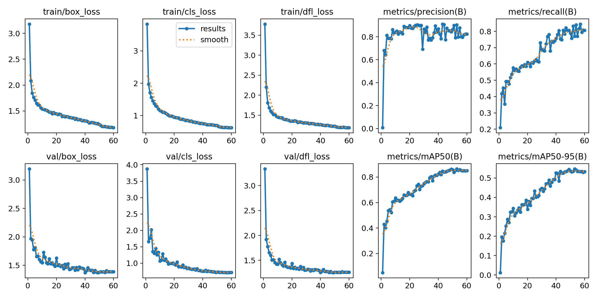
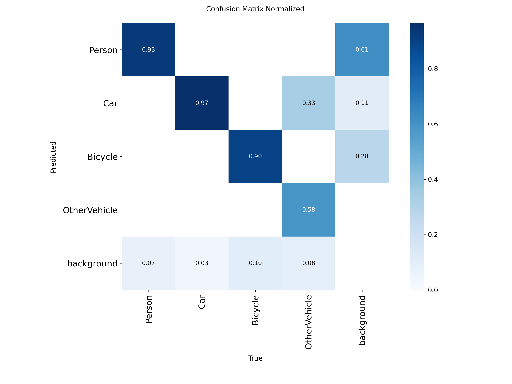
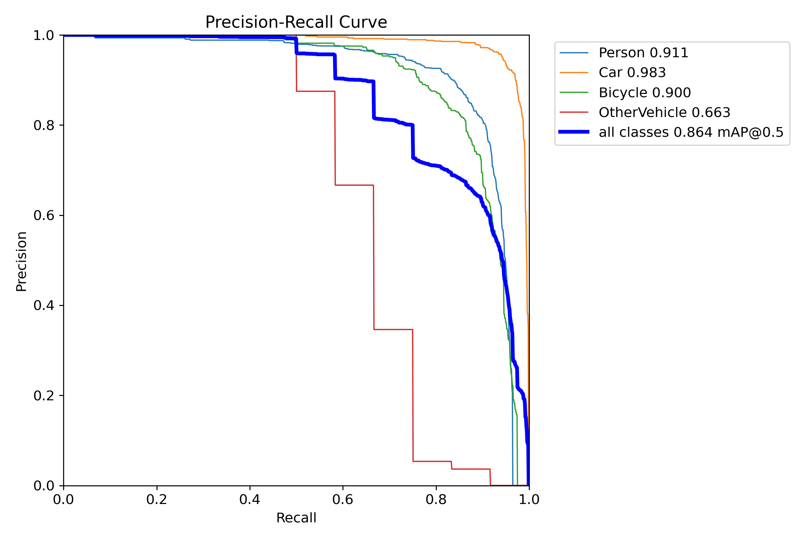
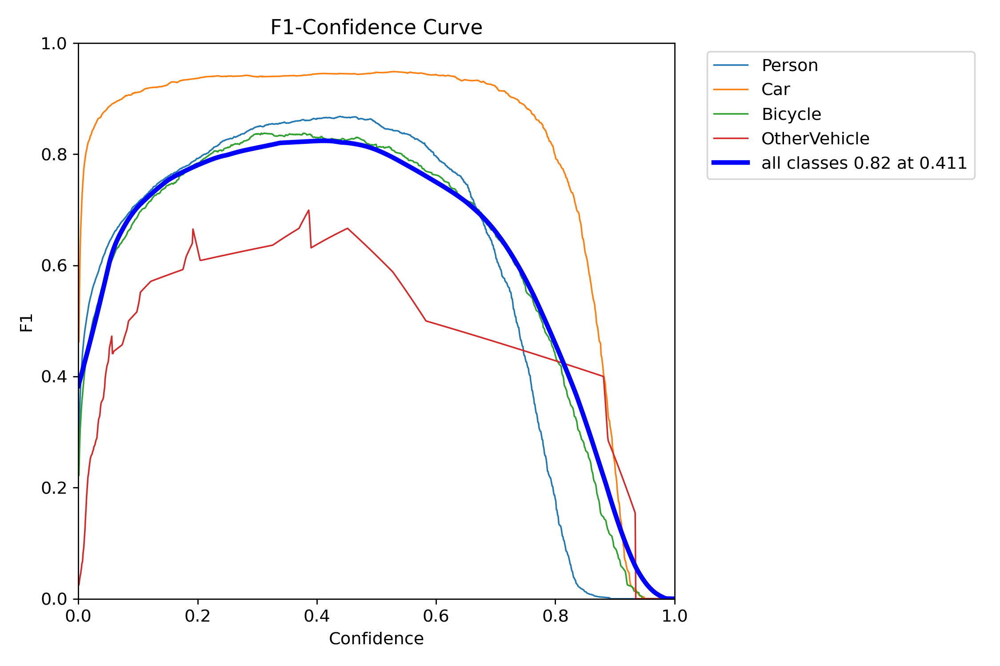
运行性能与 NPU 算力核算
GPU 基准：NVIDIA RTX 4080（32 GB）· CUDA 12.8 · PyTorch 2.8 · FP32 · batch = 1
| 项目 | 单帧 preprocess | 单帧 inference | 单帧 postprocess | 总延迟 | 峰值显存 |
|---|---|---|---|---|---|
| YOLOv8n-IR (640×640, val) | 0.0 ms | 0.7 ms | 1.0 ms | 1.7 ms / 帧 | 8.2 GB |
| YOLOv8n-IR (640×640, test) | 0.4 ms | 1.4 ms | 1.7 ms | 3.5 ms / 帧 | 8.2 GB |
NPU 等效算力换算（目标平台：CV184XH，INT8，1.5 TOPS）
采用与事件相机相同换算口径（1 MAC = 1 INT8 OP）。
YOLOv8n-IR，目标帧率 25 fps：
= 6.05 GMAC × 25 fps ÷ 1000 = 0.151 TOPS
占 CV184XH 1.5 TOPS INT8 预算比例：0.151 / 1.5 = 10.1%
| 配置 | GMAC / 帧 | 目标帧率 | 所需算力 (TOPS) | 占 1.5 TOPS |
|---|---|---|---|---|
| YOLOv8n-IR · 25 fps（设计基准） | 6.05 | 25 | 0.151 | 10.1% |
| YOLOv8n-IR · 50 fps | 6.05 | 50 | 0.303 | 20.2% |
| 三路并行 (IR + 微光 + 事件) · 25 fps 估算 | ~20 | 25 | ~0.5 | ~33% |
HIT-UAV test 集检测可视化
从 test 集随机采样并按典型场景挑选；推理使用 best.pt（epoch 60）；置信度阈值 0.25
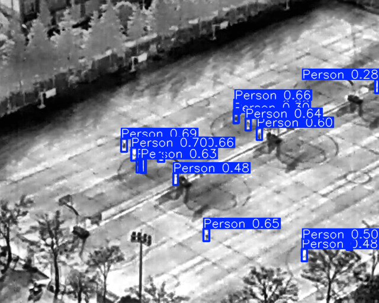
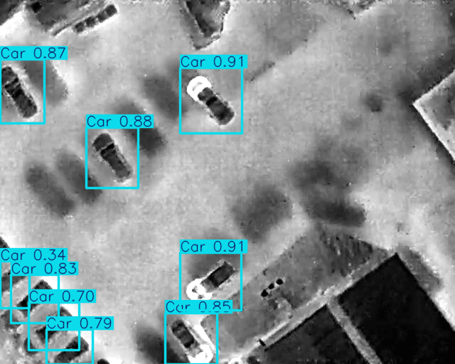
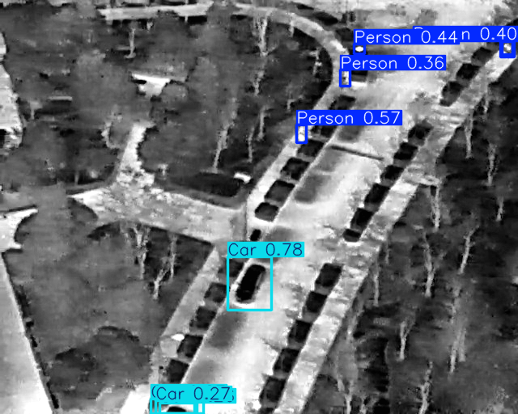
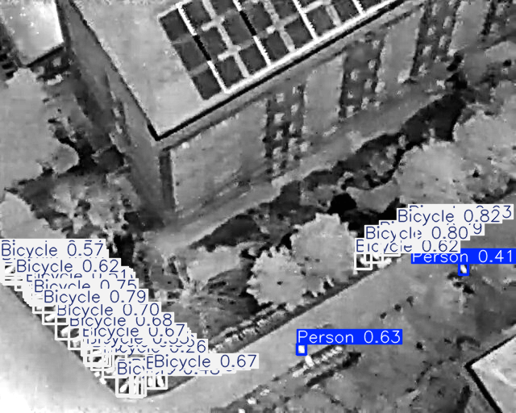
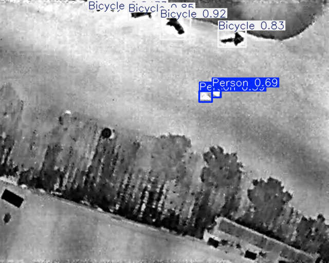
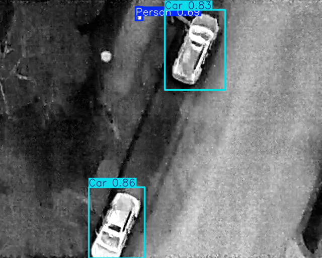
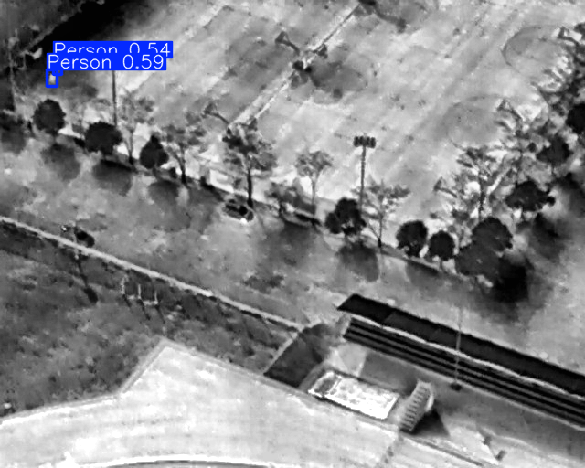
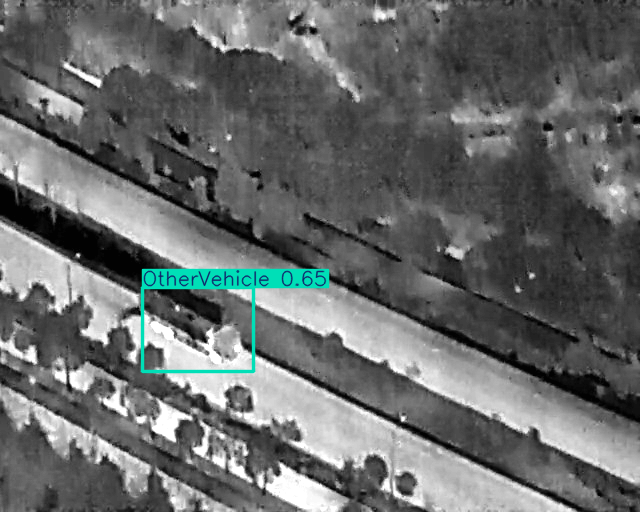
参考文献
[5] Suo, J., et al. (2023). HIT-UAV: A high-altitude infrared thermal dataset for Unmanned Aerial Vehicle-based object detection. Scientific Data, 10:227. github.com/suojiashun/HIT-UAV-Infrared-Thermal-Dataset
[6] Jocher, G., et al. (2023). Ultralytics YOLOv8. github.com/ultralytics/ultralytics
[7] Zuiderveld, K. (1994). Contrast Limited Adaptive Histogram Equalization. Graphics Gems IV.
[8] Friedman, J. W. (1986). Two-Point Nonuniformity Correction for IR Focal Plane Arrays. Optical Engineering.